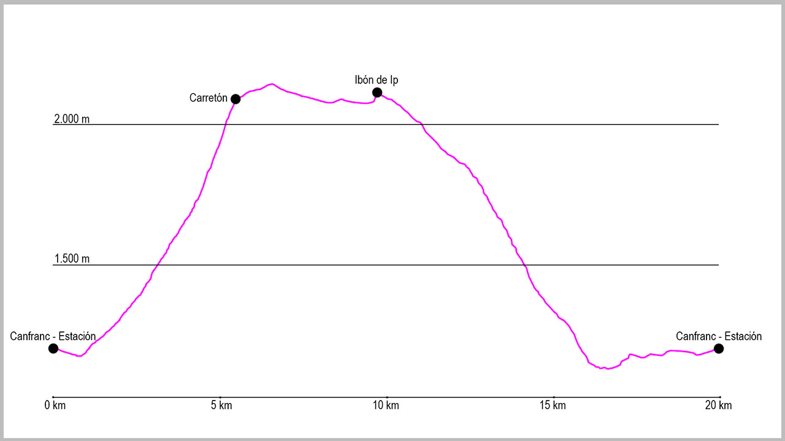

Desde el puente de la Estación de Canfranc, punto de salida de la ruta, tomaremos la calle principal de Canfranc-Estación en dirección sur. Tras 750 metros de ligero descenso, saldremos del casco urbano para llegar a la central de Canal Roya, y justo al pasarla cruzaremos un puente que sale a nuestra izquierda. Nada más pasarlo comienza una pista de forma ascendente que a poco más de 100 metros del inicio se bifurca. En este momento tomaremos la pista de la izquierda. Una vez en la pista, discurriremos por ella unos 600 metros obviando el cruce que sale a nuestra izquierda hacia el paseo de Los Melancólicos, donde seguiremos a la derecha.
Poco después cogeremos el siguiente desvío, esta vez a nuestra derecha, donde comienza el camino que nos llevará hasta el Carretón. El sendero es bastante cómodo, con suaves “zetas” que nos harán ir ganando altura de manera progresiva. Cuando llevemos un tercio de la subida, tendremos que prestar atención al paso por el interior de un pequeño túnel para cruzar la tubería de la central de Ip que nos acompañara casi toda la subida. Seguiremos subiendo progresivamente hasta llegar a otro cruce, donde volveremos a tomar la opción de la derecha. A partir de este punto solo tendremos que seguir el camino.
En la parte final de la subida, ya por encima de los 2.000 de altitud, tendremos unos 100 metros de longitud con alguna clavija que nos ayudará a sortear el desnivel, pero que pasaremos sin complicación. Poco después de este tramo casi acabará ya el bosque. Justo a la salida del mismo, volveremos a tener un pequeño trozo de roca, donde tendremos que extremar la precaución, pero que nos dará ya paso a la pista del Ibón de Ip.
Justo al salir a ella la tomaremos en dirección sureste, a nuestra derecha, y proseguiremos por ella durante casi 5 kilómetros. El hecho de que sea una pista no debe hacernos bajar la guardia, ya que al no tener mantenimiento, hay muchos tramos donde habrá que tener especial precaución.
Cuando la pista esté a punto de acabarse pasaremos junto a una torre de equilibrio de la central de Ip, para dejarla a nuestra izquierda y continuar lo que queda de la pista unos 200 metros y llegar a un cruce que tomaremos a nuestra izquierda de nuevo. Tras unos 300 metros dejaremos a la derecha el refugio de Ip y llegaremos al dique de la presa.
Nuestro camino de vuelta comienza volviendo hasta el último cruce, pero en lugar de volver por donde hemos venido, seguiremos recto por la pista hasta llegar a una gran piedra cuadrada y desde donde divisaremos un edificio blanco a nuestra derecha. Giraremos hacia el para pasarlo por su izquierda y girar poco después nosotros también en esa dirección. En la primera parte el camino es algo confuso, por lo que seguir las señales e hitos será vital. Primero iremos en dirección oeste hasta llegar a un pequeño barranco a nuestra derecha, seco, que cruzaremos entre las piedras y volveremos a coger el camino en dirección oeste, nuestra izquierda. Aunque aquí el camino empieza a estar más marcado, sigue siendo escasa la caja, por lo que toda la atención posible será importante.
A menos de 500 metros del último barranco, el camino gira bruscamente 45 grados a nuestra izquierda (cruz marcada en el suelo). Aunque es importante este giro, si por equivocación siguiéramos recto, acabaríamos llegando otra vez al camino, pero de manera más incómoda.
Desde este momento, el camino cada vez es más fácil y cómodo de seguir. Pasaremos primero por una antigua paridera de ganado y posteriormente un barranco que suele llevar poca agua, para adentrarnos entonces en el bosque. Desde este momento el propio sendero nos hará descender progresivamente durante varios kilómetros hasta que pasemos por debajo de la vía del tren, justo en el borde del barranco de Ip. En este momento cogeremos una pista en dirección sur que nos llevará hacia Canfranc-Pueblo, pero unos 500 metros después del puente llegaremos al cruce del camino de Santiago. Giraremos en este momento a nuestra derecha para coger las marcas de GR y seguirlas en dirección norte.
Este tramo de recorrido no tiene pérdida alguna, y poco a poco nos llevará hasta la presa de Ip, donde subiremos hasta la carretera y donde iremos por el arcén hasta el punto de salida en el puente de la Estación de Canfranc.
